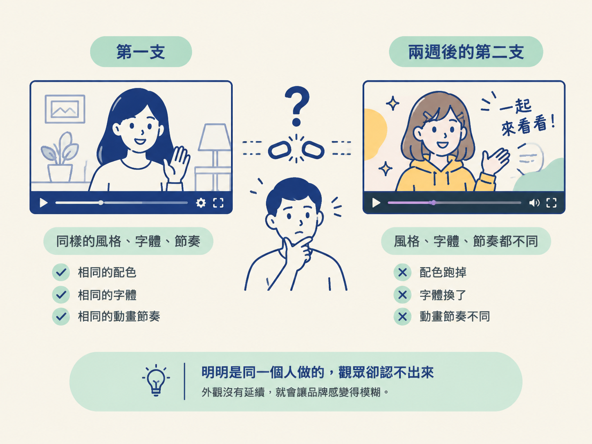
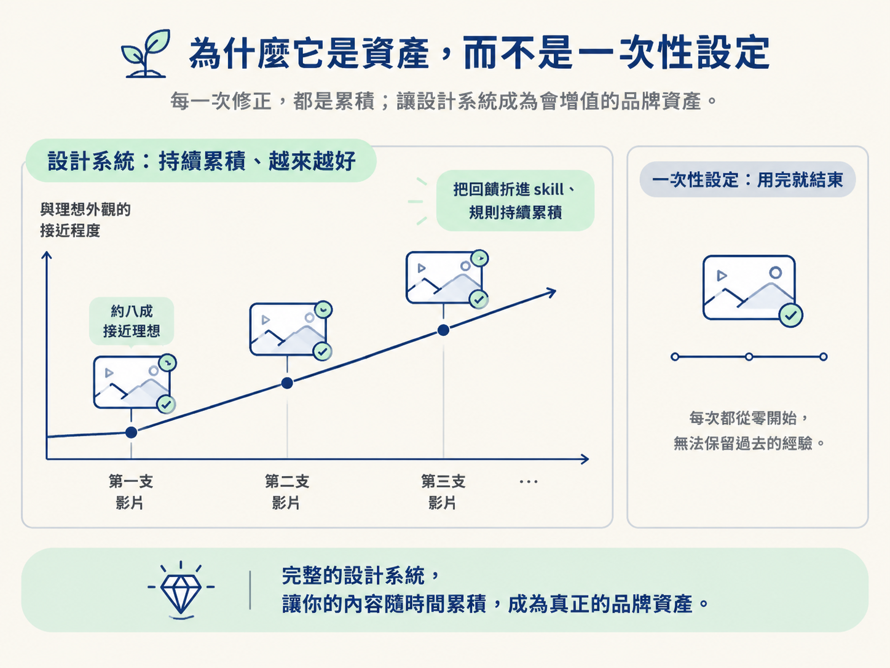
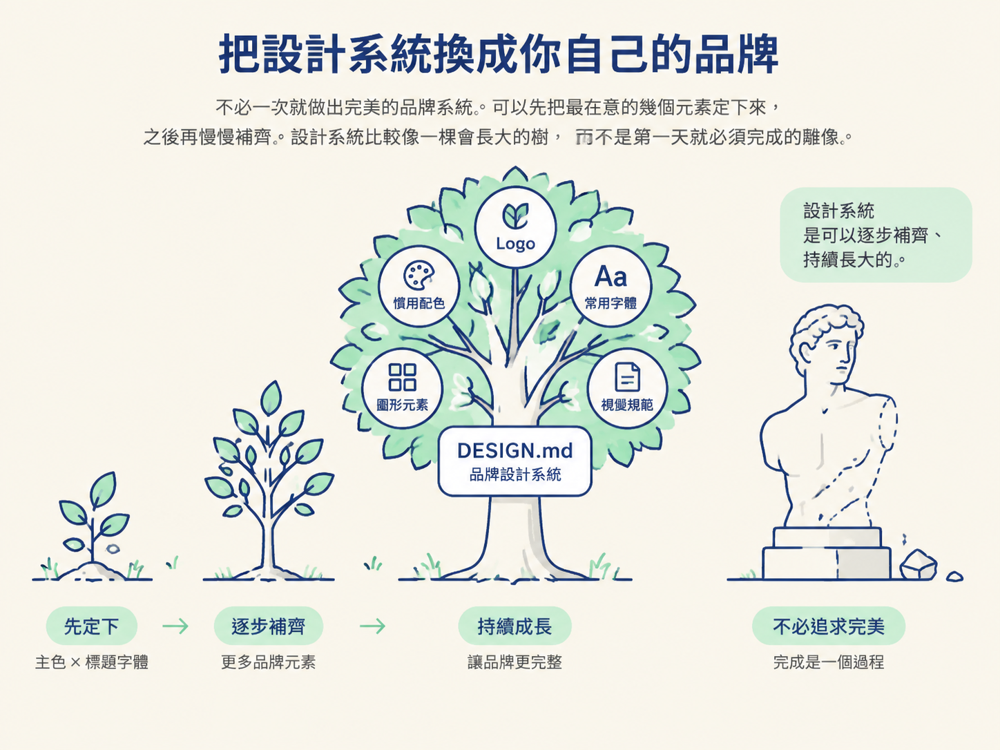

當你完成一支影片後，要再做下一支往往不難；難的是讓下一支看起來仍然屬於同一個頻道。配色、字體、字卡和動畫節奏只要稍微跑掉，觀眾就可能覺得這是另一個人做的。
這一節要處理的，就是影片 pipeline 裡的「一致性」：把原本只留在單一專案裡的設計規則，移到每次製作影片都會讀到的 skill。這樣一來，設計系統會從某一支影片的設定，變成整個頻道的預設外觀。
你會理解為什麼設計系統是一項會累積的品牌資產，也會知道如何把它放進 skill，讓每支影片自動沿用同一套外觀。
想像一下：你花了不少時間，把一支影片調整到滿意。配色、字體和節奏都很符合你的期待。兩個禮拜後，你拿著新素材再做一支，成品卻像另一個頻道製作的：顏色跑掉了，字體換了，動畫節奏也不一樣。
明明是同一個人做的，觀眾卻認不出這是你的作品。問題不一定出在你的審美改變了，而是那套外觀還留在上一個專案裡，沒有跟著你前往下一支影片。
要讓每支影片都像同一家的，設計系統不能只放在單一專案的資料夾裡。它還需要放在每次開工都會被讀到的地方，也就是你的 skill。

前面提過，DESIGN.md 是放在專案資料夾裡的一份檔案。這種做法很清楚：每個專案各自帶著一份設計規則。
但它也有一個明顯的限制。當你換到另一個專案時，DESIGN.md 仍然留在原來的地方，agent 讀不到它。於是，你只好重新說明一次配色、字體和其他視覺規則。做了兩三支影片之後，你會發現自己一直重複交代相同的內容。
比較好的做法，是把設計系統收進你的 skill。skill 是 agent 動手前一定會讀的說明檔；把 DESIGN.md 放進去，或讓 skill 指向它，就像在工作室門口貼上一張固定的品牌指南。每次開工前，agent 都會先看一眼「這家的影片該長什麼樣」，不需要你再次提醒。
如此一來，品牌外觀就從「這一支影片的設定」，變成「這個頻道的預設」。
一份 prompt 用完就結束了；一份放進 skill 的設計系統，卻會被一支又一支影片重複使用。當你說「這份檔案就是我的影片之後要用的外觀」，它就成了品牌的一部分，不再只是這次工作的設定值。
這也是為什麼前面一直強調要把原文存下來，不要任意改動。這套規則不是只服務一次，它會在之後的工作裡持續被沿用。
而且它會累積。每次你看著成品給回饋，新的規則就能折進 skill；下一次製作時，這些經驗會自動派上用場。
第一支影片可能只做到八成，第二支、第三支則會愈來愈接近你想要的樣子，因為前面幾輪修正都留下來了。真正拉開差距的，通常是設計系統夠不夠完整、有沒有把過去累積的規則留下來，而不是這次 prompt 下得多厲害。

前面幾節為了先跑起來，你是從現成的設計系統庫挑一套。不過，若要讓影片真的「像你」，最後還是要換成自己的品牌系統。
其實你手上通常已經有不少材料：logo、慣用的配色，以及常用的字體。把這些元素整理成一份 DESIGN.md，就是你的品牌設計系統。
實務上，很多人會先借用一套現成系統，再逐步換成自己的版本。例如，有位創作者把自己的淺色系品牌配色搬進設計系統，之後影片裡的色票就會直接受到這套配色影響。另一位創作者則用自己團隊的設計系統決定字卡的顏色與字體；agent 只要記得這一套，之後每支影片就能沿用它。
你不必一次就做出完美的品牌系統。可以先把最在意的幾個元素定下來，例如主色和標題字體，之後再慢慢補齊。設計系統比較像一棵會長大的樹，而不是第一天就必須完成的雕像。

把設計系統放進 skill，不代表第一支影片就會完美。即使設計系統已經到位，素材也剪乾淨了，只跑一次動畫 prompt，通常還是只能做到八成左右；剩下的部分，仍然需要你看著成品執導。
真正的差別在於：有了 skill 之後，你要修的東西會愈來愈少。上一支影片的經驗已經寫進設計系統，下一支就不必再從同樣的問題重新開始。
設計系統的位置，決定了它是一次性的專案設定，還是能持續發揮作用的品牌資產。放在單一專案裡的 DESIGN.md，換一支影片就可能失效；收進 skill 之後，agent 每次開工前都會讀到它，品牌外觀也就從「這次的設定」變成「這個頻道的預設」。
放在單一專案裡的 DESIGN.md，換一支影片就失效；把設計系統收進 skill，agent 每次開工前都會讀到，品牌外觀就從「這次的設定」變成「這個頻道的預設」。它會被你自己的 logo、配色、字體一步步替換成真正屬於你的版本，也會隨著每一次回饋累積，愈用愈準。
現成系統可以幫你先跑起來，自己的品牌系統則會讓作品逐漸長成你的樣子。接下來要判斷的，就是什麼時候適合沿用現成系統，什麼時候值得花力氣整理自己的設計系統。